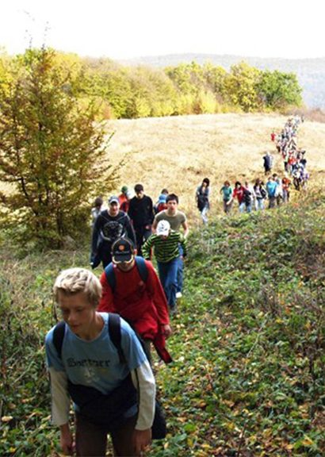
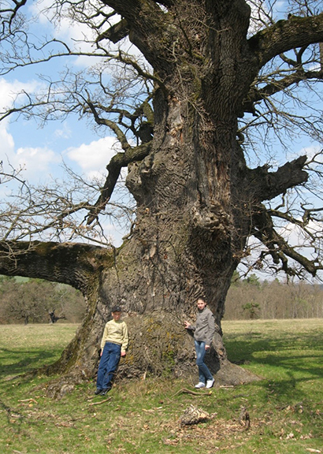

Breite Plateau
The Breite Plateau near Sighisoara is the largest wooded habitat with hornbeam and oak trees in central and eastern Europe. The oaks from Breite are the oldest living things in Sighisoara: some of them were present at the foundation of the fortress settlement and survived the tumultuous events in the history of Transylvania, from wars and changes of sovereignty to fires and earthquake.
In the autumn of 2006, one of the MET’s first actions as custodians of the Ancient Oak Tree Reserve was to gather ten thousand acorns from the plateau, and plant them in the nursery of the Sighisoara forestry department, where they were well cared for and grew into vigorous saplings. Our goal was to restore the age continuity and tree density of the Breite plateau, ensuring a succession of oak trees of different ages. This ancient wood-pasture was suffering from a wide generation gap - there were veteran oaks of nearly 800 years and many between 300 and 500 years, but very few younger ones. Many areas of the plateau were completely devoid of trees. As part of our five-year management plan, the Trust planted 500 oak saplings and, at the same time, protected another 1500 naturally seeded ones from grazing animals.
The project was further supported by the "Oak Tree for Every Pupil" scheme with local schools, a way of captivating the minds and hearts of Sighisoara's young generation and involving them in the conservation of the Breite Reserve.

